Highlights from projects I've worked on as a content marketer and product marketer.
RunSybil · July 2026 to present
Product Management: RunSybil Continuous Coverage
RunSybil provides customers with agentic security testing for web applications, proving which vulnerabilities are real, high-impact exploitable weaknesses.
I co-led Continuous Coverage from early concept to its public launch. For this launch, I did the following:
Built a design-partner preview to test early concepts with customers: what should trigger a test, which change signals matter, and what guardrails they'd need before we locked the design
Ran MVP backlog grooming with engineering and pushed for a dedicated engineering owner for the project
Set product rules for how testing is scheduled. For example, Sybil can't check for changes less often than it tests, so a scheduled test never runs with nothing new in it
Ran functional reviews of the build before launch and turned them into prioritized UI fixes
Redesigned the Continuous tab as a clickable prototype built on one simple model: switches set what Sybil watches (code for white box, the live site for black box), and each test draft is the one place to include or skip changes
Wrote the launch blog post, captured its product screenshots, made a launch video for social, and added the feature to the customer-facing product roadmap deck
The Continuous tab: Sybil checks code and the live site every day, flags what changed since the last test, ranks each change by risk, and explains why it's worth testing.
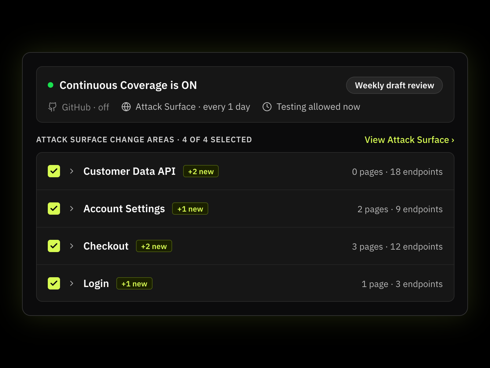
Black box: with no code access, Sybil re-crawls the live app and flags new endpoints by area.
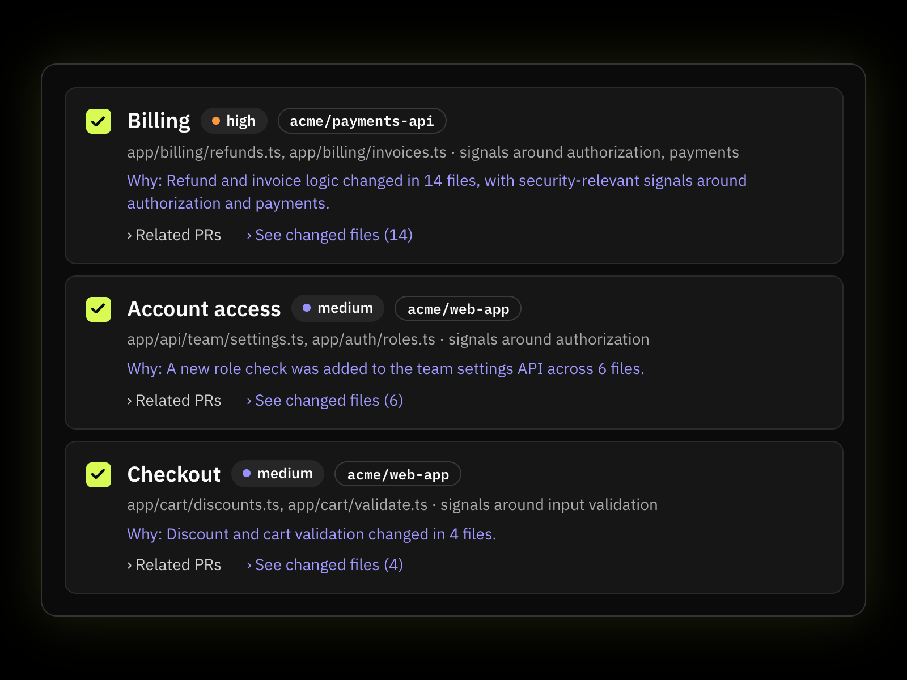
White box: with code connected, Sybil groups merged changes into areas, ranks each by risk, and lists the files behind it.
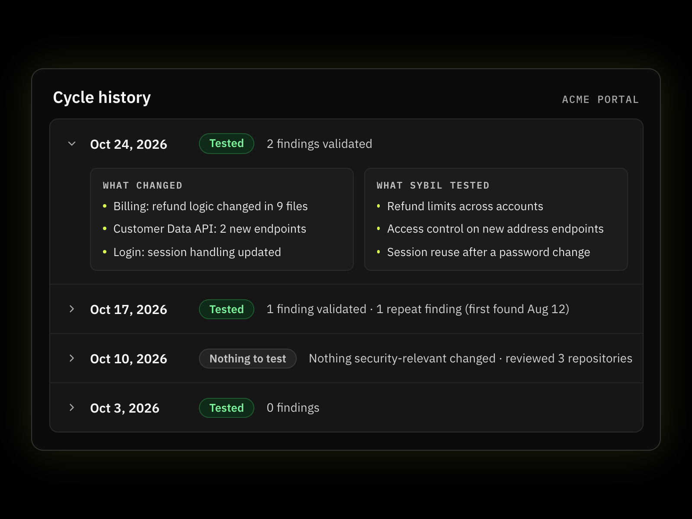
Cycle history keeps a record of what changed and what Sybil tested in every cycle, even in a week with no findings.
Synack · Q4 2022
API Pentesting Go-to-Market
Led go-to-market for a new product that let customers upload their API documentation and activate security researchers to test it.
Owned the value proposition and pricing
Built sales enablement, customer collateral, and usage guides
Wrote the marketing blogs and web pages for the launch
Defined the success metrics used to track it
After one year, the product made up about 10% of testing volume and 5% of revenue.
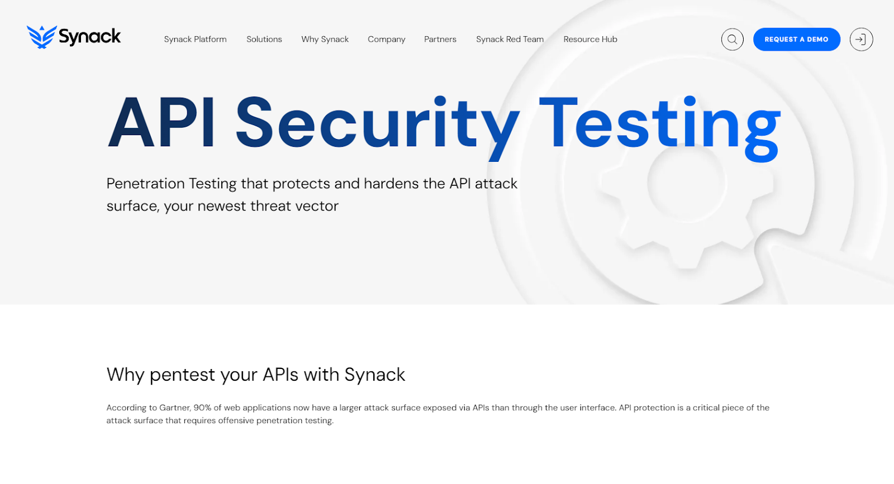
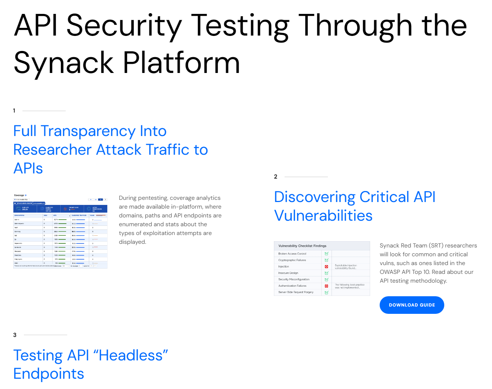
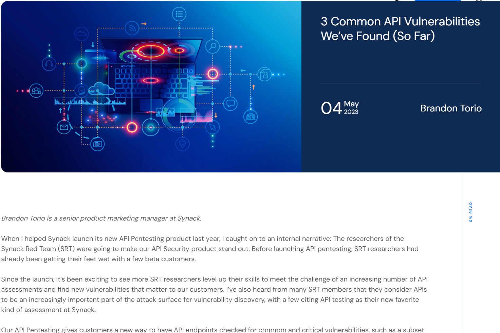
Silicon Labs · 2019–2020
Training Portal Redesign
A full redesign of the online training portal, from customer experience to the final build. The live portal is here.
Defined the customer experience, content organization, and visual design principles
Worked with IT to build the functionality on top of existing wireframes
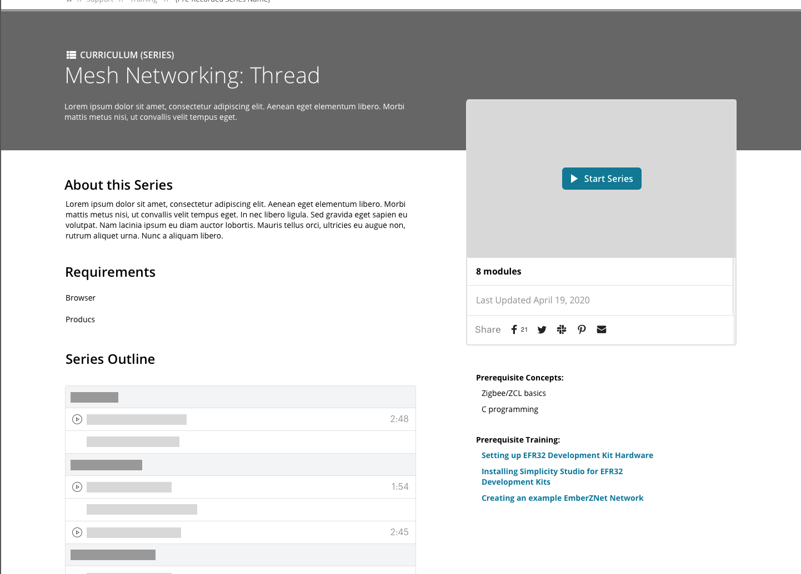
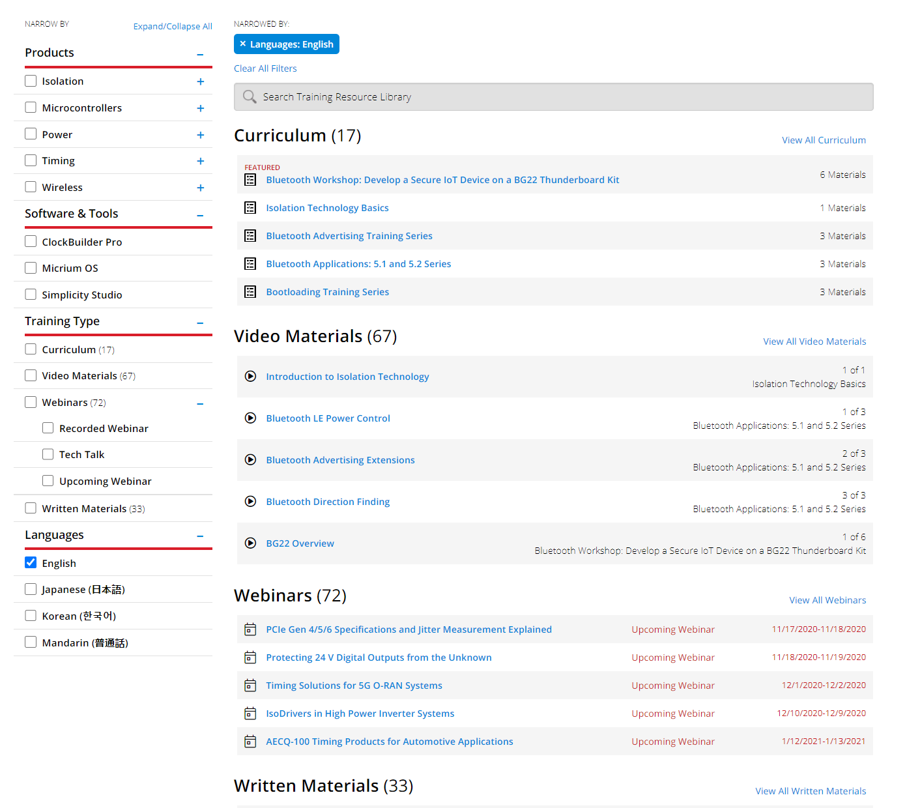
Original wireframe
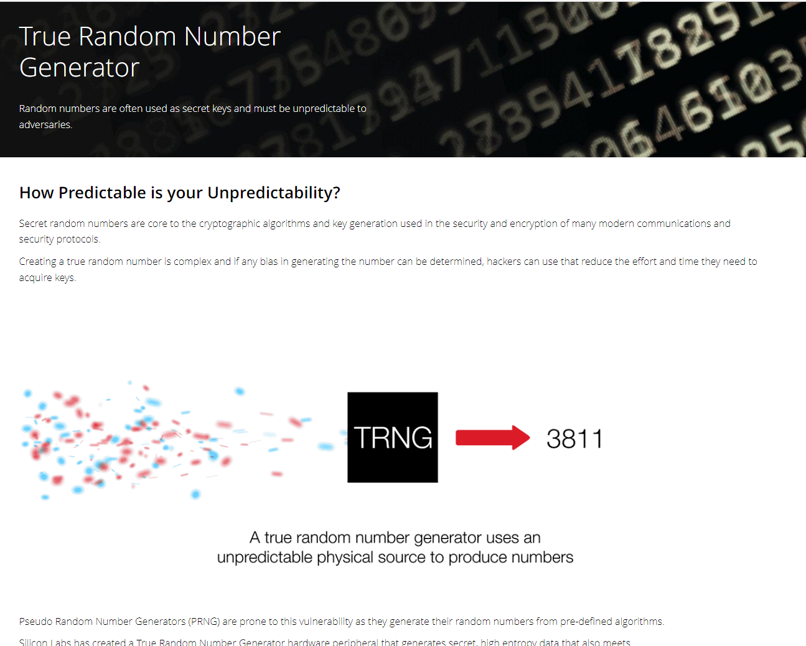
Final portal
Silicon Labs
Security Landing Pages
Web pages explaining the security features of Silicon Labs products.
Worked with product marketing on page organization and copy editing
Created explanatory images and GIFs for each feature
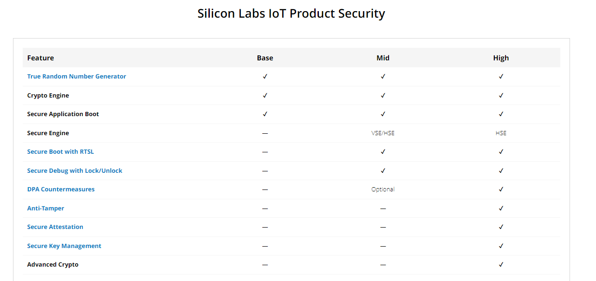
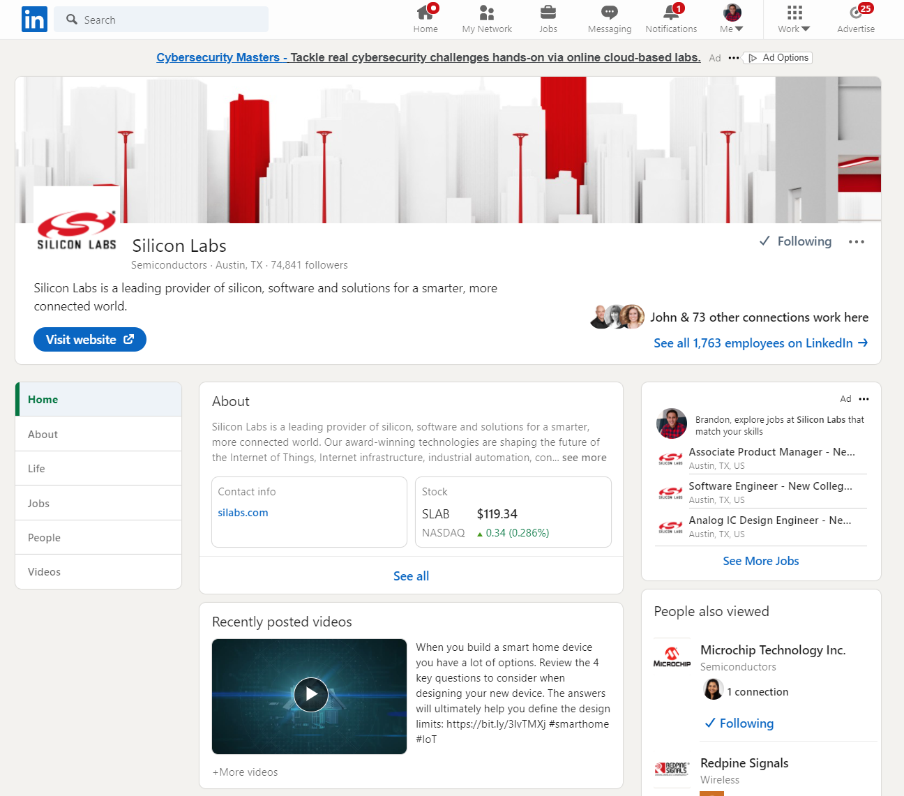
Silicon Labs
Social Media Management
Co-managed the company's social channels across Instagram, Facebook, LinkedIn, and YouTube.
Created posts and visuals
Ran Facebook ads from a quarterly budget
Tracked engagement, web traffic from links, and follower growth in Khoros
More of the video work behind these projects is on the Video page.